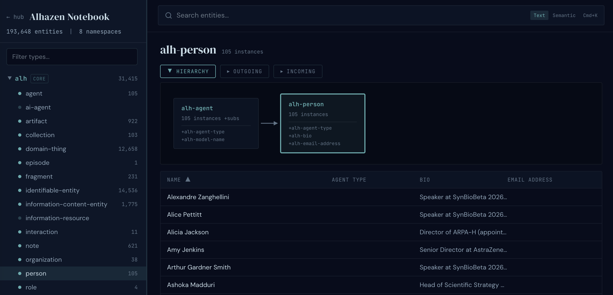

Complex Knowledge Curation using Agentic Ontological Notebook Memory
Every agent that persists memory must make a semantic commitment to a specific data schema, either implicitly or explicitly.
In today's agent stacks those commitments are buried in prompts, tool definitions, and heuristics — implicit, untestable, hard to refine.
We make them explicit. Rather than using flat vector or markdown memory, we showcase a typed knowledge graph in TypeDB. Domain concepts have names, types, and relations. The schema is the agent's 'world model'.
The system is based on standard agentic skills. Each bundles a TypeDB schema extension, Python scripts, and prompts (SKILL.md).
Curation — organizing disparate information into a well-formed knowledge representation.
The notebook schema is a type hierarchy with three high level categories of entities.
The curation process depends on the skill, but generally consists of a well-ordered pattern.
Goal-driven technology investigation.
Success criteria are first-class entities. Candidates flow through a typed pipeline — candidate → confirmed → ingested → analyzed — so progress is itself a queryable graph property.
Create schema, scripts, prompts, and dashboard for a new skill.
Success criteria are first-class entities. Candidates flow through a typed pipeline — candidate → confirmed → ingested → analyzed — so progress is itself a queryable graph property.
TypeDB-backed ontological memory.
Introspects the live schema, composes TypeQL queries dynamically, and combines graph traversal with semantic search for three-stage retrieval: plan, execute, organize with provenance.

Personal career pipeline tracking.
Rare-disease mechanism curation.
Monarch Initiative DisMech data mapped to Alhazen Notebook via Claude-generated GLAV rules. 1,068 disorders with phenotypes (HPO), causal genes, treatments (MAXO), and PubMed evidence.
DisMech benchmark — 13 questions, 3 categories, same corpus. Ground truth computed deterministically by scanning YAML (no LLM in scoring).
| Question type | TypeDB | RAG |
|---|---|---|
| Pathway aggregation"How many diseases involve WNT/β-catenin mechanisms?" | 0.75 | 0.00 |
| Absence detection"Which diseases have phenotypes but no genetic entries?" | 0.68 | 0.00 |
| Global ranking"Top 5 diseases by number of mechanisms?" | 0.77 | 0.03 |
RAG's failures are architectural — aggregation requires counting; absence requires evidence of non-existence; ranking requires ordering by structural property. Typed graphs have these primitives natively.
What is the best way to model a person in the system? As an author, a job-hunter, a company contact? The answer is all three — via formal role-bearing relations (UFO/OntoUML).
- A person is rigid — strip the institution, they remain.
- A role is anti-rigid — it comes and goes with context.
- Role-specific data sits on the role, never polluting the person node.
When the agent encounters something the current schema cannot represent, it records the gap as a note and files a GitHub issue. The coding agent then extends the schema; GLAV mapping rules migrate prior data; curation continues.